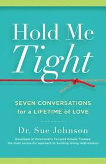

《抱紧我：七次改变爱情的对话》
书·Sue Johnson, 2008·Hold Me Tight: Seven Conversations for a Lifetime of Love

情绪聚焦伴侣治疗的创始人写给大众的书：把伴侣之间的争吵看作依恋需要未被回应，并提供七次谈话的练习。中译名未核实，此处中文题名为直译或沿用旧数据。
- 作者
- Sue Johnson
- 年份
- 2008
- 难度
- 入门
- 类型
- 实践
- 所属学派
- 情绪聚焦治疗
- 核心理论
- 伴侣情绪聚焦治疗
版本
- 中文版 《抱緊我》 [加] 蘇珊．強森 Dr. Sue Johnson · 劉淑瓊 译 · 張老師文化 豆瓣页面 ↗
- 英文版 Hold Me Tight: Seven Conversations for a Lifetime of Love Sue Johnson · Little, Brown, first edition · 2008 Open Library ↗